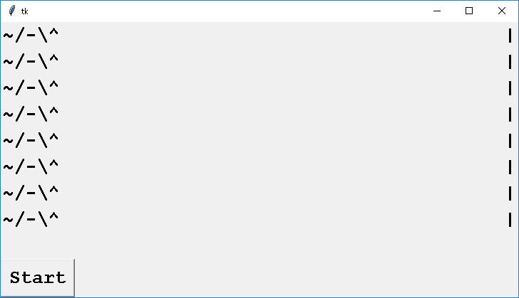
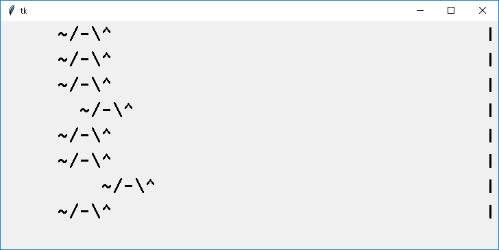
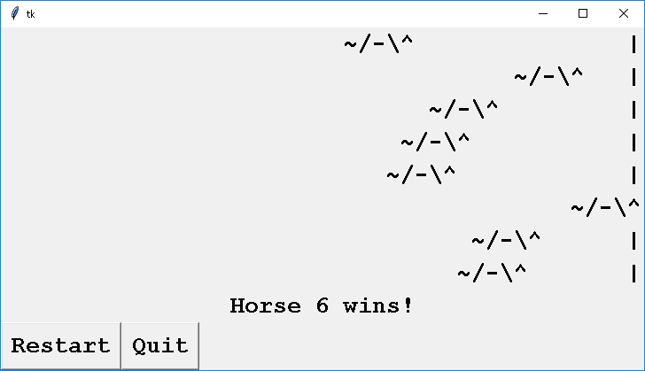
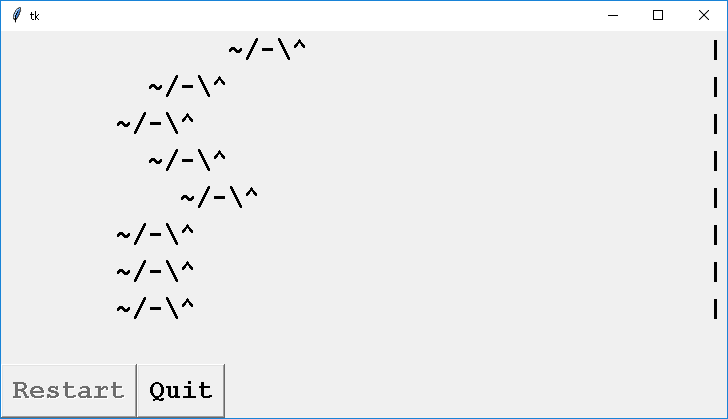

| 配分：[0.00] | |
1. Adding Buttons to Horse Racing
修改先前的 Horse Racing 作業，加入一些按鈕：
- 之前程式一開始，馬兒就往前跑。現改為要等使用者按 Start 鈕才開始。 (之後我們可能要等使用者下注，再開始。)

- 當馬兒開始跑後，Start 鈕就消失。 (Hint: pack_forget)

- 當某一匹馬抵達終點，顯示獲勝後，出現兩個按鈕。 Restart 則再比一次，Quit 則程式結束 (root.destory).

- 使用者按了 Restart 後，在比賽進行間，這個按鈕的狀態應該被設成 DISABLED。 (不然你試試看，跑到一半按 Restart, 會發生奇怪的事。) 被 DISABLED 的按鈕，文字會變灰色， 按了也不會有反應。

|
|